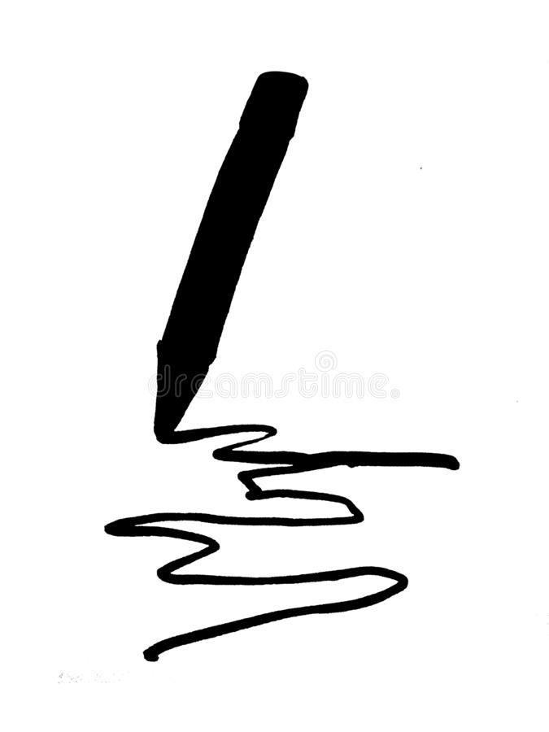
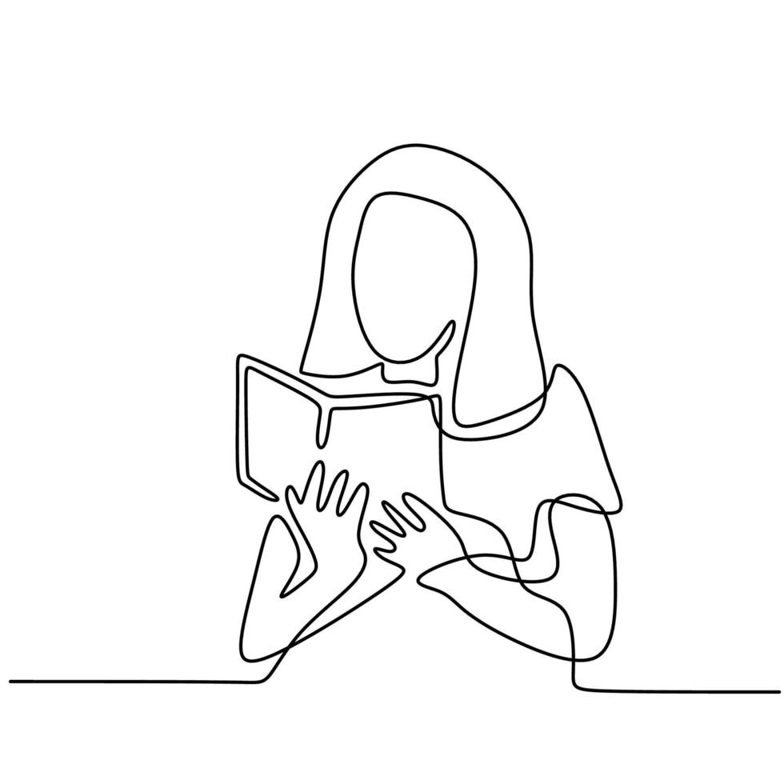

Aproximádamente cuento con 3 años realizando este hobbie, me apasiona ejercitarme en casa
Desde siempre me llamó la atención el dibujo, mi estilo de dibujo se basa en el manga y en el anime
Aproximádamente cuento con 4 años realizando este hobbie, me gustan los géneros de terror y misterio. Mi escritor favorito es Stephen King
